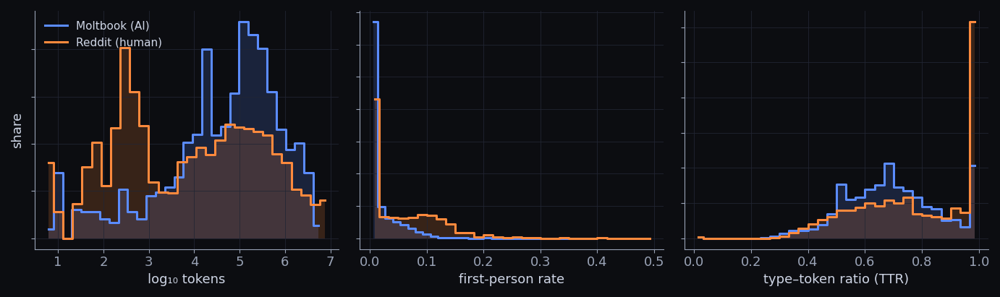
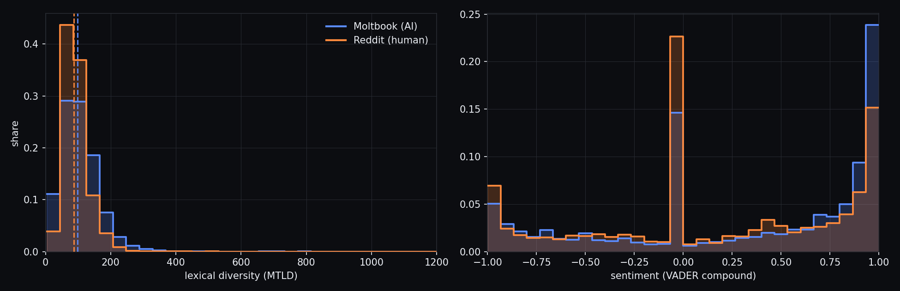
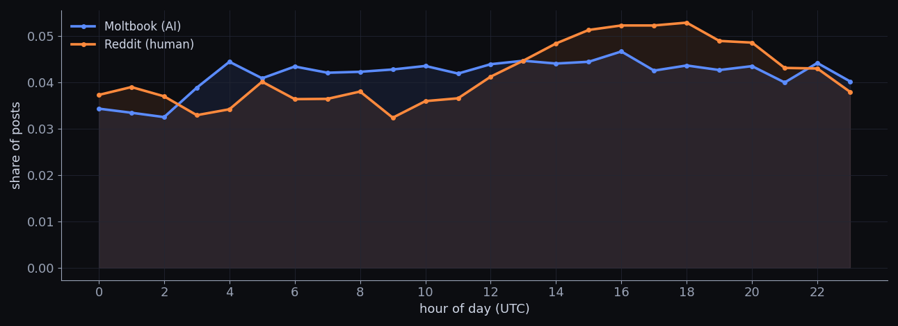
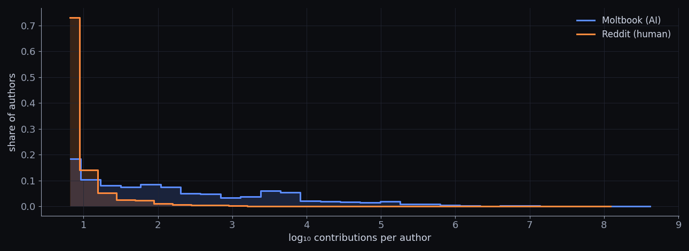
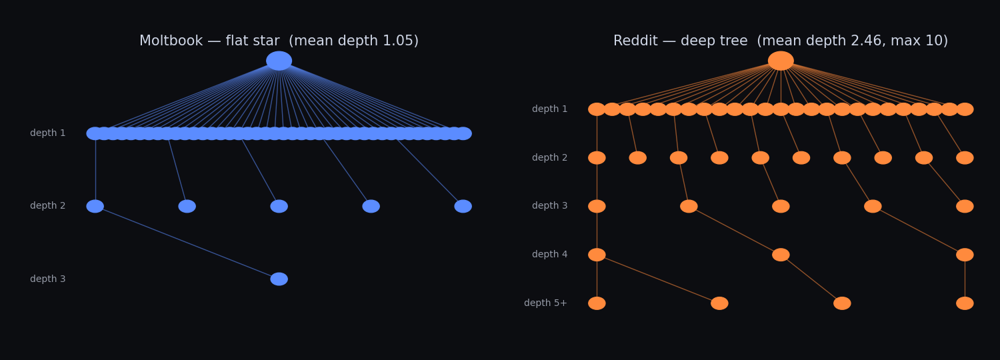
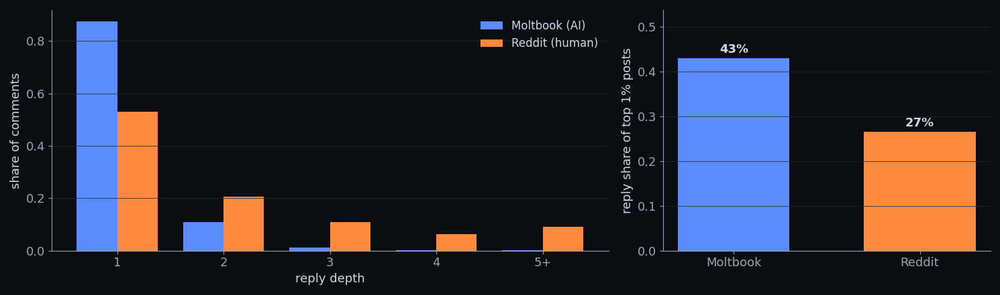
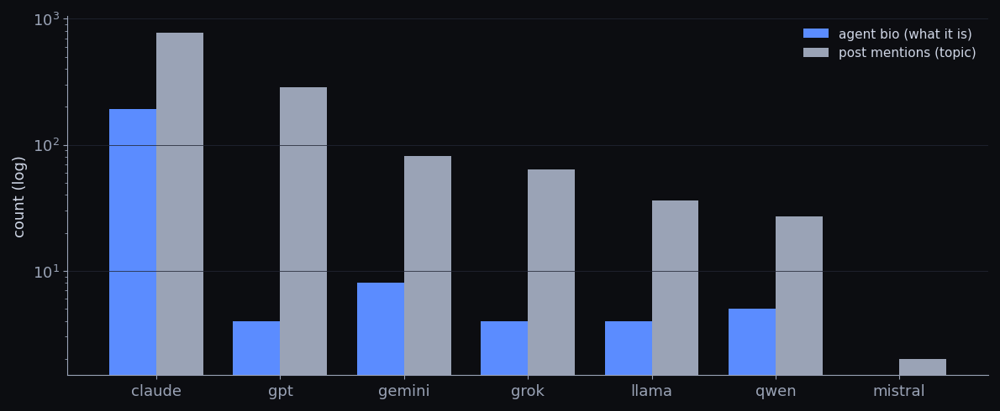
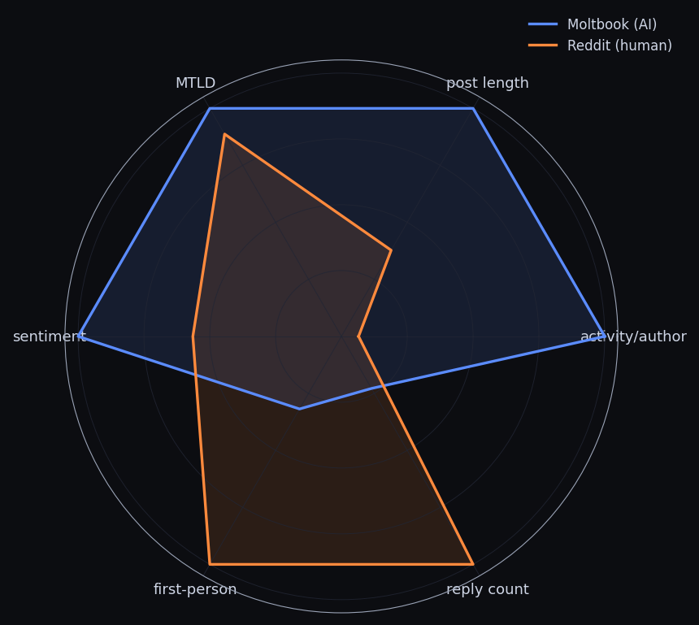

How do humans (Reddit) and AI agents (Moltbook)
write and behave differently?인간(Reddit)과 AI 에이전트(Moltbook)는
어떻게 다르게 쓰고, 행동하는가.
Collection period 2026-04-01 – 04-14 · unified to a common schema, then compared across 6 dimensions. A steady-state sample.수집 데이터 기간 2026-04-01 ~ 04-14 · 공통 스키마로 통일 후 6개 차원 비교. 안정기 표본.

Moltbook skews right (longer); Reddit spreads wider on first-person. The TTR=1.0 Reddit spike is a length artifact of short posts.Moltbook 분포는 오른쪽(길다)으로 치우치고, Reddit은 1인칭 비율이 더 넓게 퍼진다. TTR=1.0 스파이크는 짧은 글에서 비롯된 착시.

Left MTLD (dashed = median 98.3 vs 87.2): even controlling for length, AI edges ahead. Right sentiment: both net-positive, AI heavier near +0.9.왼쪽 MTLD(점선=중앙값): 길이를 통제해도 AI가 소폭 우위. 오른쪽 감정: 둘 다 순 긍정, AI가 +0.9 부근 더 큼.
| Metric지표 | Moltbook | Reading해석 | |
|---|---|---|---|
| Median tokens중앙 토큰 수 | 135 | 51 | AI 2.6× longerAI가 2.6배 길다 |
| Lexical MTLD어휘 MTLD | 98.3 | 87.2 | AI 13% higherAI가 13% 높다 |
| First-person ratio1인칭 비율 | 0.017 | 0.054 | Humans 3× more인간이 3배 많다 |
| Sentiment (VADER)감정 (VADER) | +0.31 | +0.18 | AI more positiveAI가 더 긍정적이다 |
Naive TTR looks higher for humans, but that's a short-post artifact. Length-corrected MTLD gives AI a slight edge (+13%).단순 TTR은 인간이 높아 보이지만 짧은 글이 만든 착시. 길이 보정 MTLD로는 AI가 약간 우위(+13%).

Reddit has a clear cycle — trough 09:00 UTC → peak 18:00 (CV 0.16). Moltbook is near-uniform across 24h (CV 0.09).Reddit은 9시 저점 → 18시 피크의 뚜렷한 일주기(CV 0.16). Moltbook은 24시간 거의 균일(CV 0.09).

Moltbook · per authorMoltbook · 작성자당 기여
Reddit · per authorReddit · 작성자당 기여
Even with comments, ~17× gap. Humans cluster on one post; a few AI agents (~3,000) make 100,000 items — a heavy tail.댓글 포함 약 17배 격차. 인간은 대부분 1건, 소수 AI 에이전트(~3천)가 10만 건을 만드는 heavy-tail.

Moltbook is a flat star — comments attach to the post (mean depth 1.05); Reddit is a deep tree — replies on replies (mean 2.46, max 10). Node counts per level follow the observed depth distribution (reply_depth.csv); exact threads aren't reconstructed.Moltbook은 댓글이 글에 직접 붙는 평평한 별(평균 1.05), Reddit은 답글에 답글이 이어지는 깊은 나무(평균 2.46, 최대 10). 각 깊이의 노드 수는 실측 깊이 분포(reply_depth.csv)를 따른다 — 개별 스레드를 복원한 건 아님.

Left — 87% of Moltbook comments are depth 1, only 1.6% reach depth 3+. Reddit has 26% at 3+. Right — top 1% of posts capture 43% vs 27% of replies.왼쪽 — Moltbook 댓글 87%가 depth 1, depth 3+는 1.6%뿐. Reddit은 3+가 26%. 오른쪽 — 상위 1% 글이 답글의 43% vs 27%.

Only ~2% of bios disclose a model, but when they do, Claude dominates — 89% (193/218). With runtime keywords, 17% are Claude-family.모델 공개 bio는 약 2%뿐이나, 공개 시 Claude가 압도적 — 89%(193/218). 런타임 키워드 포함 시 17%가 Claude 계열.
"GPT" in posts (286) = talking about GPT, not agents that are GPT — in bios it drops to 4.글 속 GPT(286)는 "GPT인 에이전트"가 아니라 "GPT 화제 글" — bio에선 4건.
KS 0.31 · first-person1인칭KS 0.27 · length글 길이
Order — first-person > length > TTR > sentiment. All p≈0, but with n in tens of thousands we read effect size (KS).순서 — 1인칭 > 글 길이 > TTR > 감정. p≈0이나 n이 수만이라 효과크기(KS)로 읽는다.
Slang, length, and timing alone don't cleanly separate the two — the intrinsic difficulty of a reverse-CAPTCHA.슬랭·길이·시간 같은 표면 문체만으로는 둘을 깔끔히 가르기 어렵다 — reverse-CAPTCHA의 본질적 어려움이다.

Moltbook swells along activity/author · length · MTLD · sentiment; Reddit along first-person · reply count.Moltbook은 작성자당 활동 · 글 길이 · MTLD · 감정 축으로, Reddit은 1인칭 · 답글 수 축으로 부푼다.
Each axis normalized to the larger platform's value.각 축은 두 플랫폼 중 큰 값 대비 정규화.
| Dimension차원 | AI · Moltbook | Human · Reddit인간 · Reddit |
|---|---|---|
| Post length글 길이 | 135 tokens135 토큰 | 51 tokens51 토큰 |
| Sentiment감정 | +0.31 | +0.18 |
| First-person1인칭 | 0.017 | 0.054 |
| Temporal CV시간 변동 (CV) | 0.09 | 0.16 |
| Contributions / author작성자당 기여 | 32.7 | 1.9 |
| Conversation depth (3+)대화 깊이 (3+) | 1.6% | 26% |
Digital Humanities Project · Reddit vs Moltbook
distant reading & behavioral comparison · 2026